Kobotoolbox Tutorial
Introduction
This tutorial will guide you through the first steps for using KoboToolbox, from creating an account, generating a form with different types of questions, collecting data online and offline, exporting and visualizing data.
What is Kobotoolbox?
KoboToolbox is an open source platform for the collection, management, and visualization of data. As the most widely used primary data collection tool in the nonprofit sector, it is the tool of choice for over 14,000 social impact organizations worldwide.
Kobotoolbox features
- Build questionnaires in the web or using XLSForm
- Translate questionnaires into multiple languages
- Create a questions library
- Collect data offline or online in multiple devices (mobile phones, tablets, laptops)
- Visualize data in maps and reports
- Download data in multiple formats (XLS, CSV, KML, ZIP, GeoJSON)
- Share and collaborate on projects
Getting started in KoboToolbox
1. Create an account
Select ‘Global KoboToolbox Server’
Enter the required information in the form and click on create account.
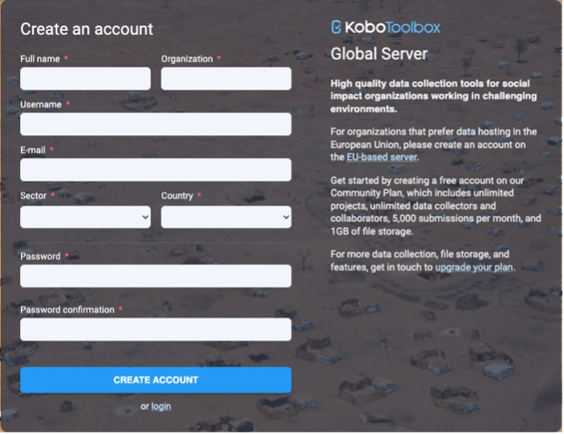
2. Login to KoboToolbox
Enter your username and password
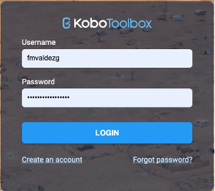
My Projects Dashboard
In the My Projects View you will find all your projects listed. You can see on the left side a list of the Status of your projects just below the ‘New’ button. On the upper right you will find three option to apply to your projects: archive, share or delete.
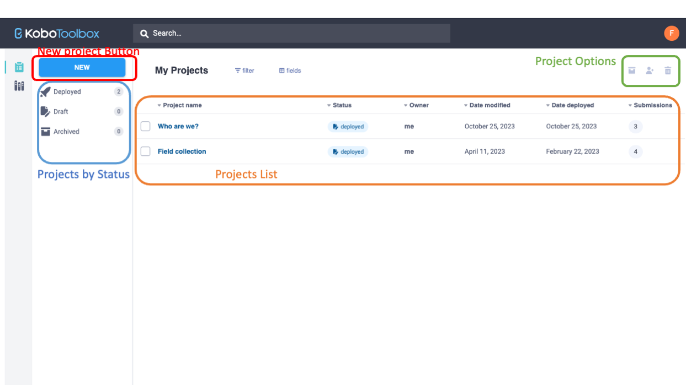
Creating a new questionnaire
Login to your account (see step 2 on previous section)
On the My Projects view, click on
NewSelect the option
Build from scratch
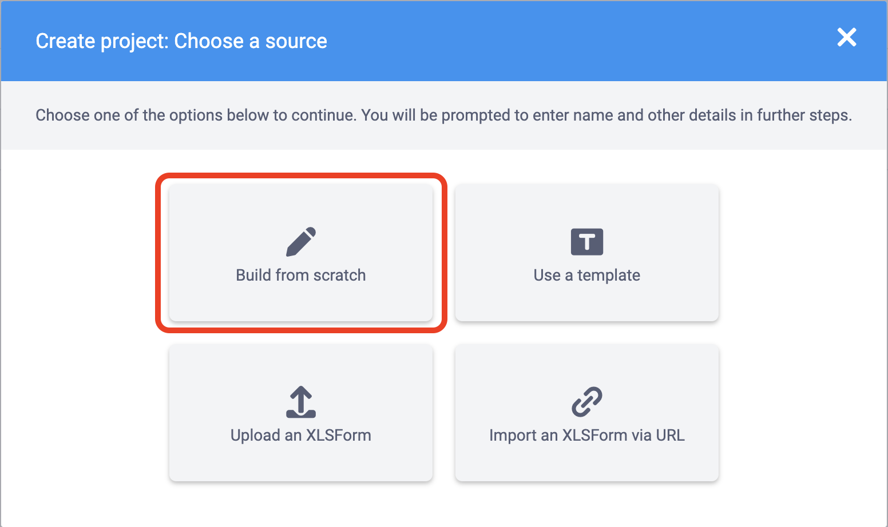
- Enter a title for your project, along with a sector and a country. Then click on
Create Project.
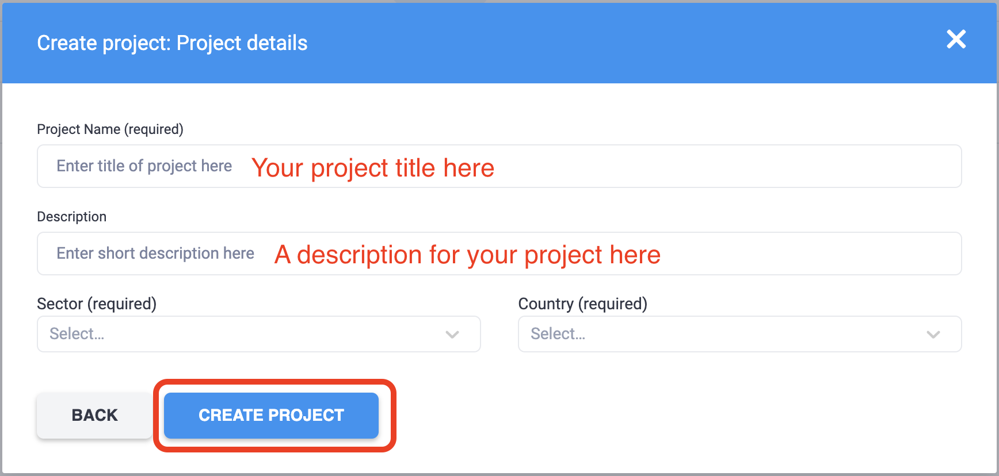
Start adding new questions by clicking on the button and then
Add a question.We are going to add a
Select Onetype question by clicking over the first option. 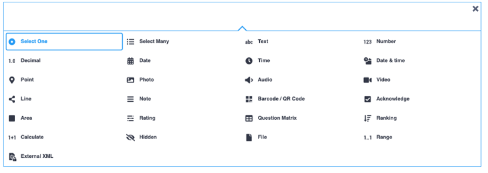In the new question, you will have a space to add the question prompt, a hint on how to respond and a list of options to respond the question. 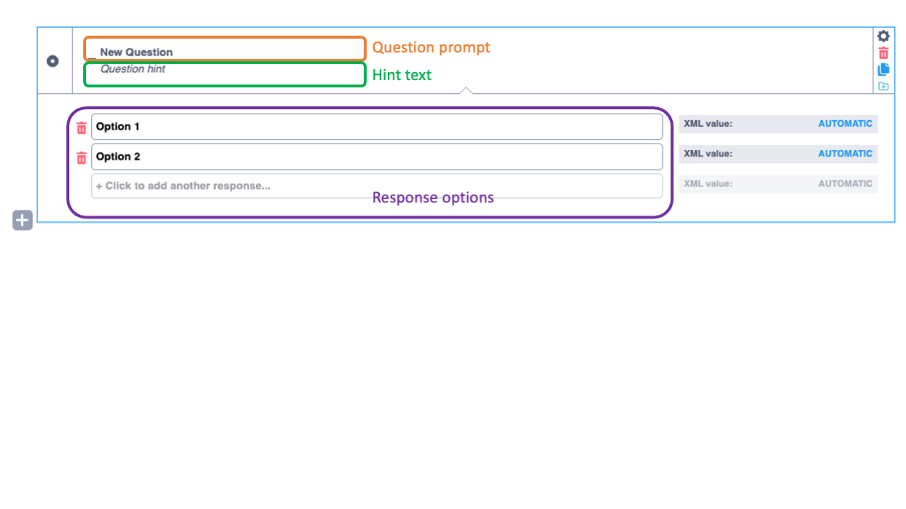
Once you are done creating questions, you can click on
 button located on the upper right corner of the screen.
button located on the upper right corner of the screen.Click on the
Retunr to listbutton located on the upper left corner to go back to the dashboard
Deploying and sharing a questionnaire
- Preview your questionnaire:
Once you are done creating the questionnaire, you might like to preview it. To do so, click on the name of your project on the list in the dashborad.
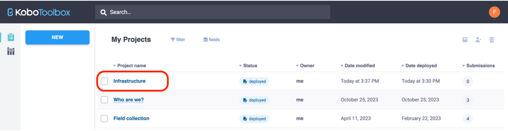
You will see a summary of the project, displaying the description, the project status, number of questions, the owner, last time modified and deployed. Also, on the bottom of the page you will see a chart and statistics of the submissions.
To preview your questionnaire, click on Preview form on the Quick Links menu on the right of the screen.
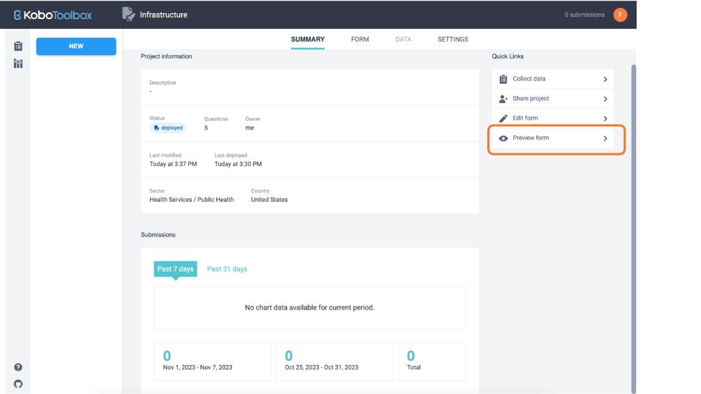
A temporary popup windows will show a complete functional version of the form. You can fill up the questions, but the responses will not be loaded to your project.
- Deploy the questionnaire
Deploying your form is needed to make it available to the public, or to those who will be filling the form in the field.
To deploy the form, click on FORM menu on the top of the screen, next to SUMMARY. Then, click on the DEPLOY (or REDEPLOY if you made changes to the form) button.
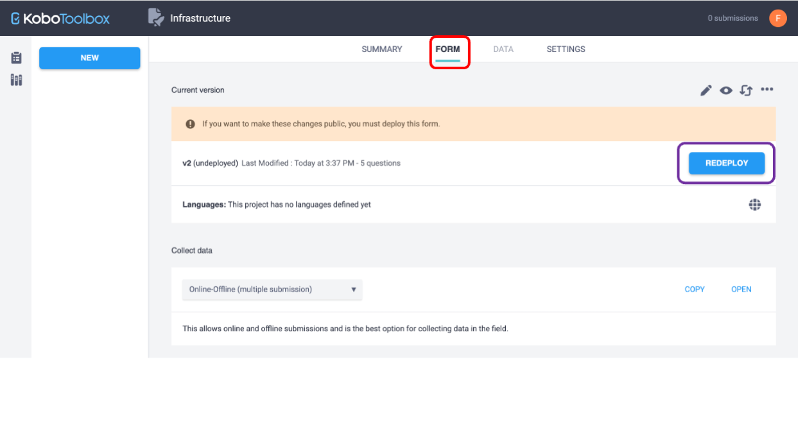
Remember to redeploy your form each time you made changes to the questions in order to see them in the form you are sharing.
- Preparing the for before data collection
Before starting to collect data, you will want to set up the mode of collection. In the same window FORM, under the section Collect data you will see a drop-down menu with multiple options. Select the one that best adapts to the type of collection you will be doing. In this case, we will set it on Online-Offline (multiple submissions) as we want to collect data without being connected to the internet.
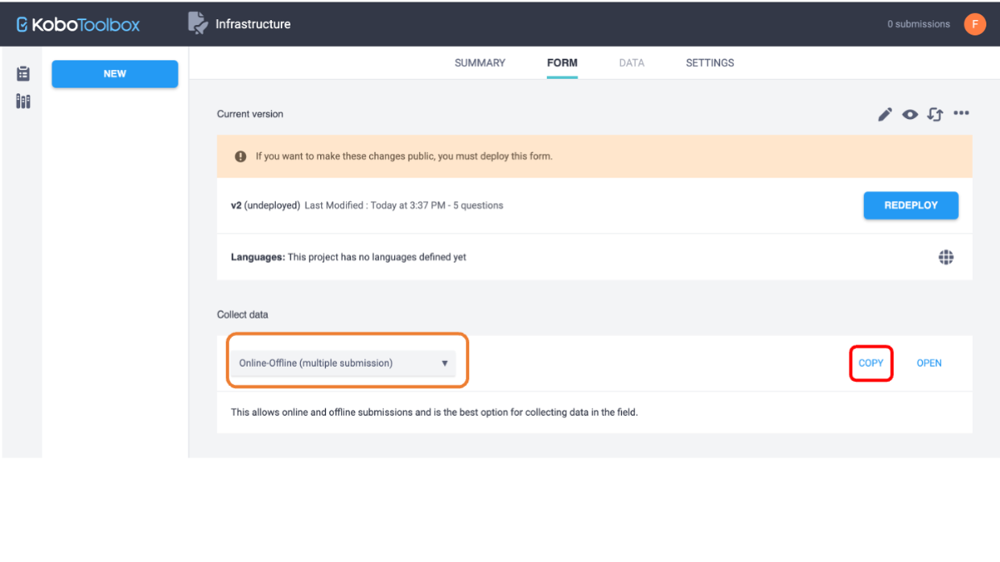
Now, to start collecting the data you can simply click on the COPY button to copy the URL of your form. You can share this url with the people that will be adding entries to the form.
Or you can click on OPEN to open the form from the browser on the device you are using.
Collecting data on a mobile device
- Once you open the URL of the form, if the form includes a location question, you will see a message asking to provide access to location services. Be sure to
allow accessif you want to be able to use the location of your phone in the form.
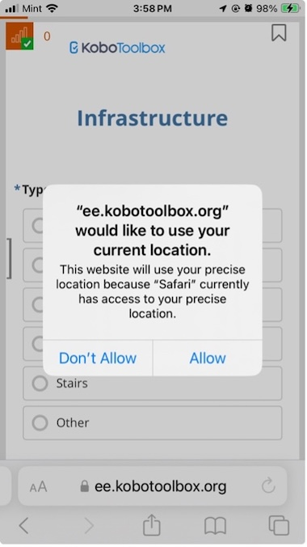
- Fill out the questions as needed.
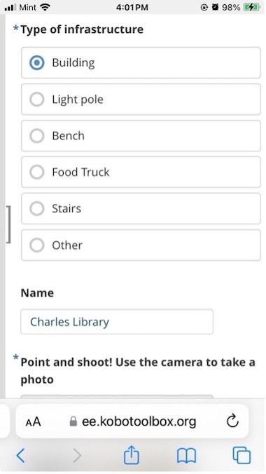
- If there is a location question on the form. Click on the record the current location icon.
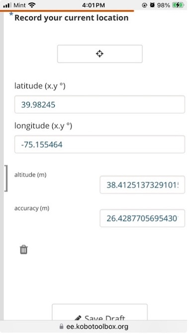
- Once you are done filling the questions, and you get to the bottom of the form, click on
Submit form.
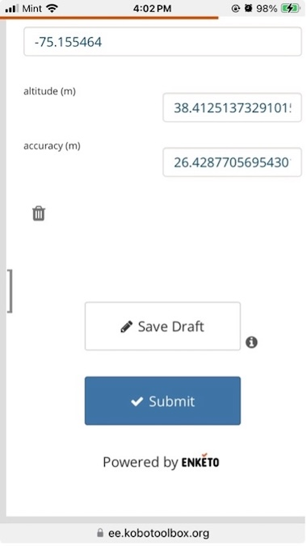
Collecting data offline
Before going to the field or while you are still online, be sure to follow these steps:
Open the form using the URL when you are still online.
To bookmark the form, if you are using an iPhone, click on the
ShareoptionClick on
Add to home screen.
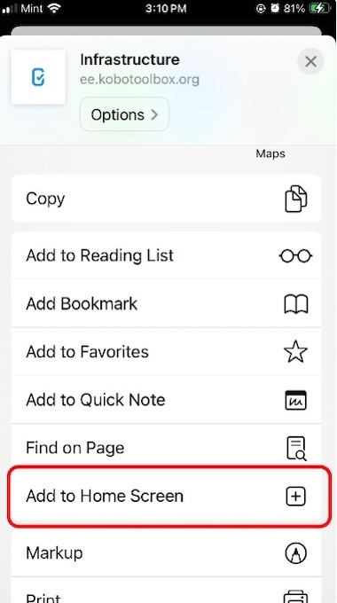
- You will see an icon created on your home screen with the name of your form
Warning! Do not clear you internet browser history if you are collecting data offline.
Well done! Always use the homescreen shortcut you just created to open the form.
Fill out the form as needed and then click on the
Submitbutton.Since you are offline, you will see a message
Record queued for submission.
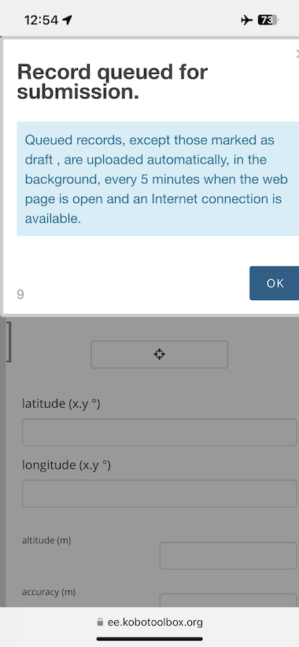
All data you fill and submit in the form while offline will be stored in your browser cache and remain in queue until you are back online.
You can see the queued records by clicking on the left edge of the screen. This will open a side panel like the one below, listing all records waiting to be uploaded.
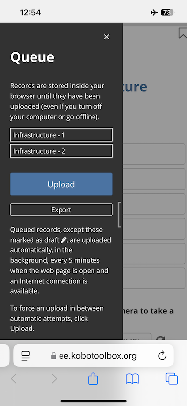
Once you are back online, simply click on the
Uploadbutton. Although the form will try to upload every 5 minutes, it is a good practive to check the queued panel to be sure all records have been uploaded.Alternatively, if you think you will not have connection soon and fear loosing your records, you can export the data and save it in your phone as a ZIP file.
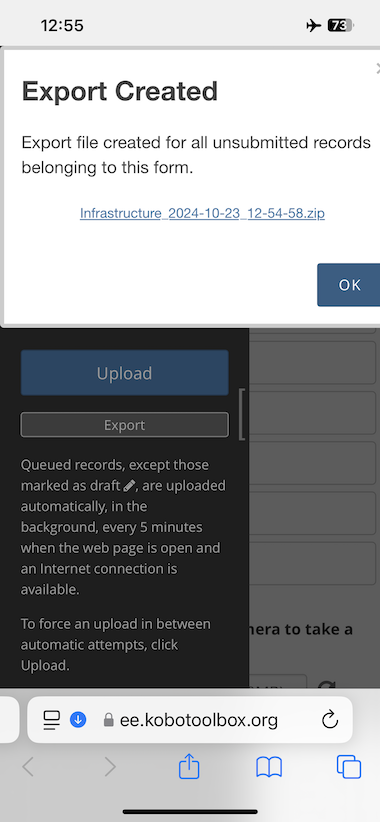
- To do so, simply click on the
Exportbutton on the queued panel and then clickOKwhen the file is created.
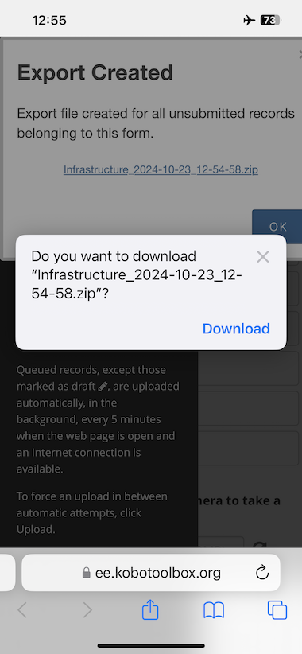
- Then click on
Downloadand your ZIP file will be saved in you device. This file contains a .xml file with every record.